01ORBIT
OpsPilot
轨道与核心：强调持续运行、可观测与稳定基座。
9 个方向，沿用深色空间、轨道与信号语言。回复 01–09 选择方向，再进入字标比例与单色版本细化。
轨道与核心：强调持续运行、可观测与稳定基座。

信号孔径：表达告警接收、方向判断与逐层收敛。

脉冲地平线：健康监测、恢复验证与时间窗口。
分层板块：对应 3D 透视与系统层级，适合作为主视觉。
拓扑节点：服务依赖、传播路径与影响范围。
分诊罗盘：定级、方向判断与调查路径选择。
盾牌脉冲：恢复验证、安全边界与受控执行。
命令提示符：可执行、可审计，字母 P 与操作入口合一。
黑玻璃方碑：延续 About 板块与 3D 空间，气质最沉稳。